"Listen your skin, use Calm-Derm"
Especialistas en el cuidado de pieles sensibles. En CalmDerm combinamos ingredientes naturales y evidencia científica para ofrecer soluciones seguras, eficaces y adaptadas a cada tipo de piel.
CalmDerm es un proyecto educativo dentro del grado medio de Farmacia y Parafarmacia, creado con el objetivo de ofrecer productos dermofarmacéuticos seguros, naturales y adaptados a las necesidades de pieles sensibles. Surge de la idea de combinar ciencia y naturaleza, ofreciendo soluciones efectivas y responsables que cuiden la piel de manera consciente.
CalmDerm pone especial atención en las pieles sensibles, desarrollando productos que respetan la barrera cutánea y minimizan el riesgo de irritaciones.
El proyecto nació en 2026 tras un análisis del sector dermofarmacéutico, detectando la necesidad de productos personalizados, seguros y sostenibles. Desde sus inicios, CalmDerm ha trabajado con un equipo especializado compuesto por un técnico en farmacia, un responsable de control de calidad y un responsable de seguridad, coordinando sus esfuerzos para garantizar la eficacia y seguridad de cada producto.
Con base en Jaén, Andalucía, CalmDerm busca ser un referente local en el cuidado de la piel, promoviendo la educación sobre hábitos saludables y el uso de ingredientes naturales. Su misión es ofrecer productos confiables y accesibles que fomenten el cuidado diario de la piel, mientras que su visión es convertirse en un ejemplo de innovación y compromiso ético dentro del sector dermofarmacéutico.
Además, CalmDerm se compromete con la sostenibilidad y la ética, seleccionando cuidadosamente ingredientes naturales y aplicando procesos que minimicen el impacto ambiental, siempre priorizando la salud y el bienestar de sus usuarios y del entorno.
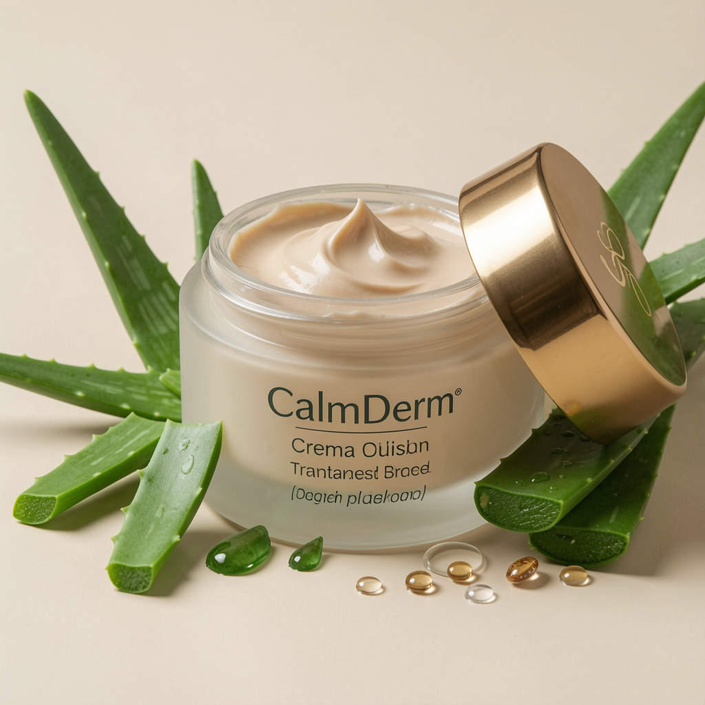
Aloe vera y aceite de jojoba orgánico, ideal para piel sensible.
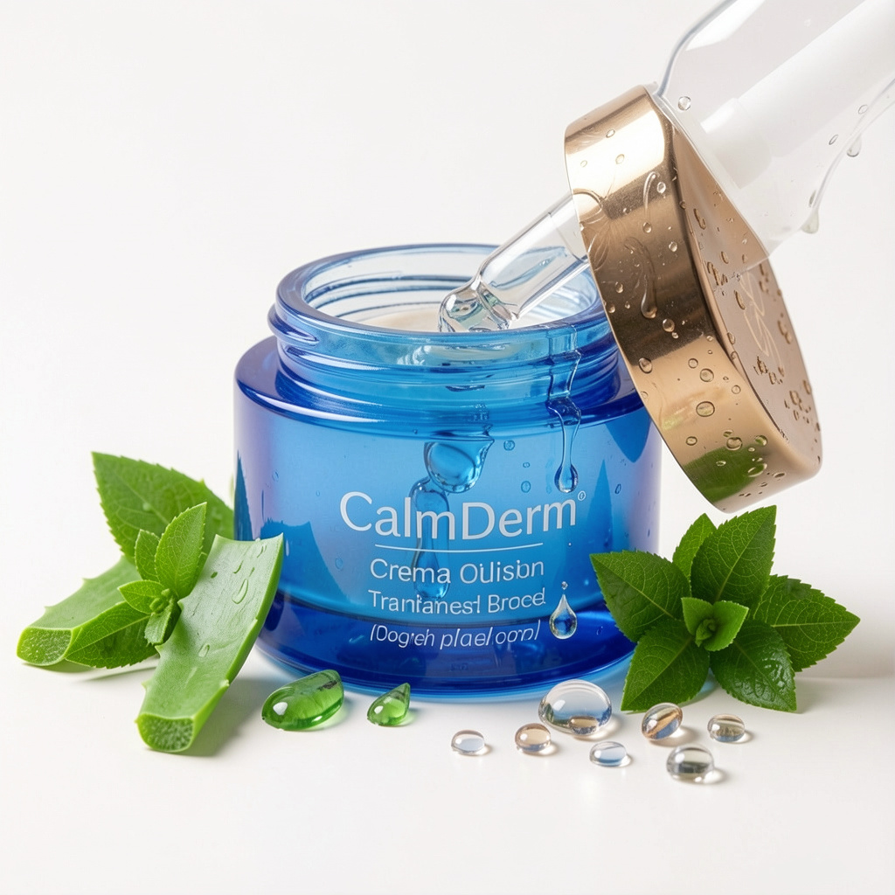
Ácido hialurónico y extracto de té verde, textura ligera y fresca.
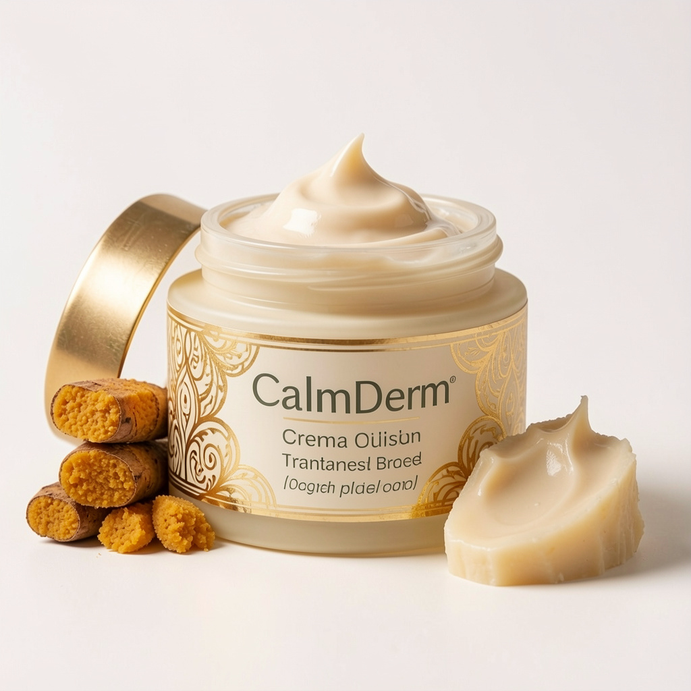
Manteca de karité pura, nutrición diaria para piel sensible.
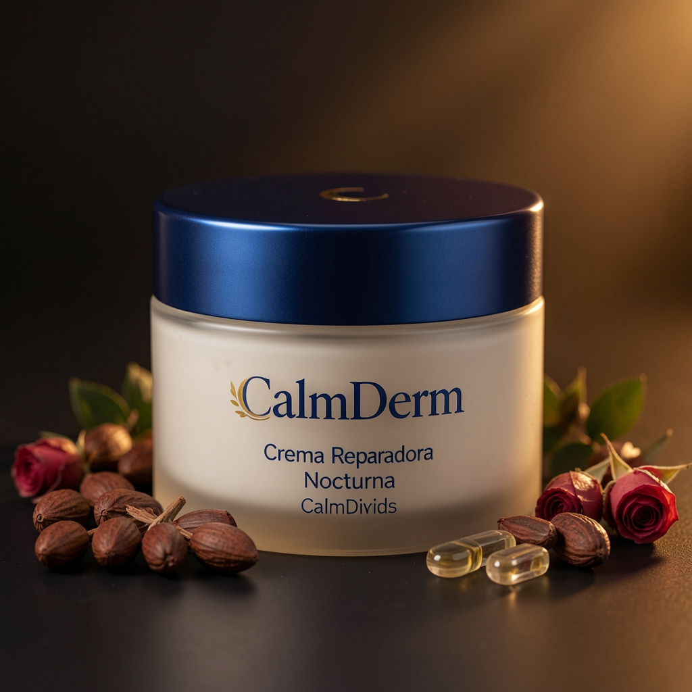
Ceramidas y aceite de rosa mosqueta, regeneración nocturna intensiva.
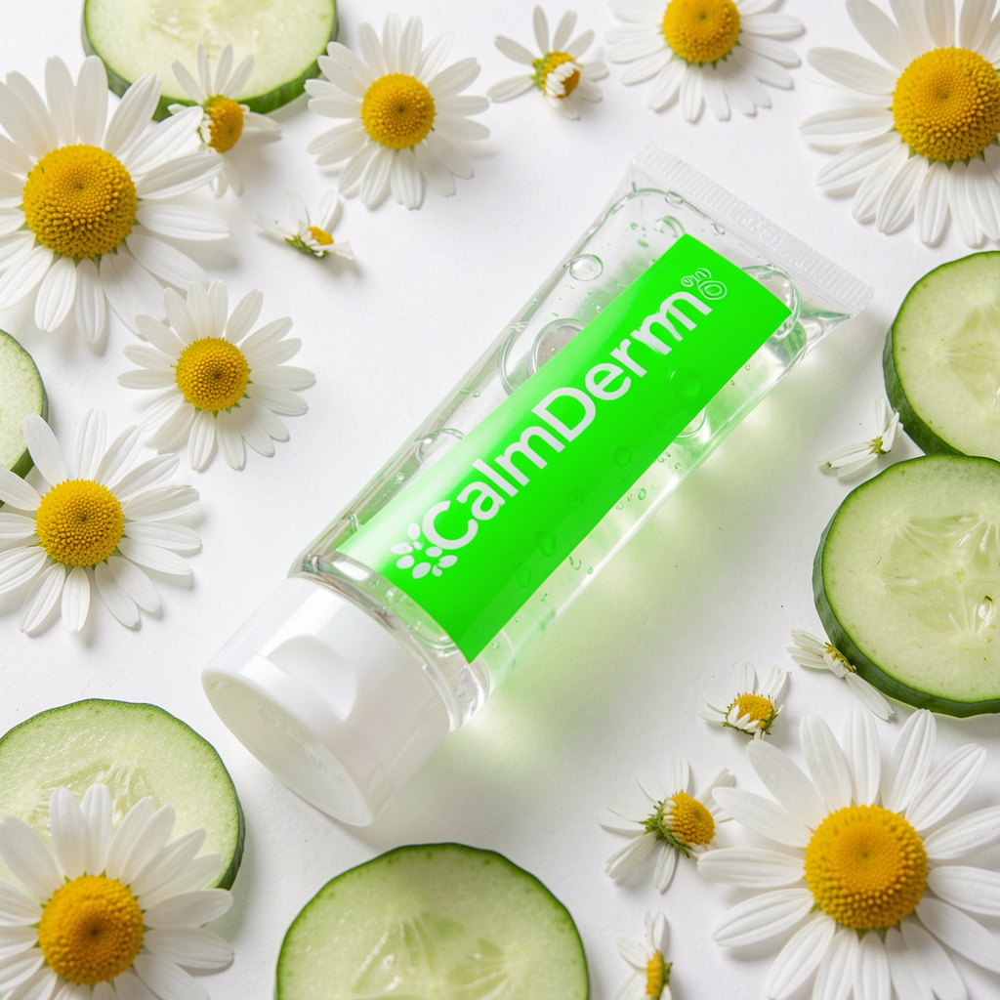
Extracto de manzanilla y pepino, calma irritaciones y rojeces.
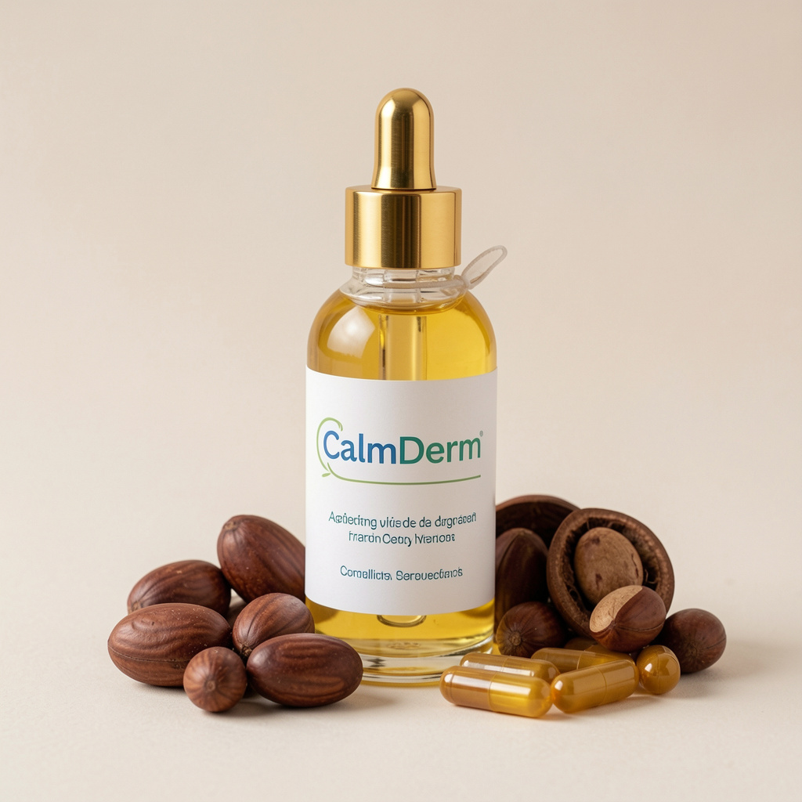
Argán y vitamina E, ideal para piel seca y sensible.
Hidrata y calma la piel sensible.
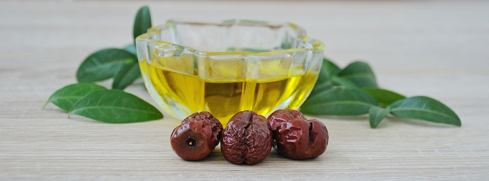
Nutre sin obstruir los poros.
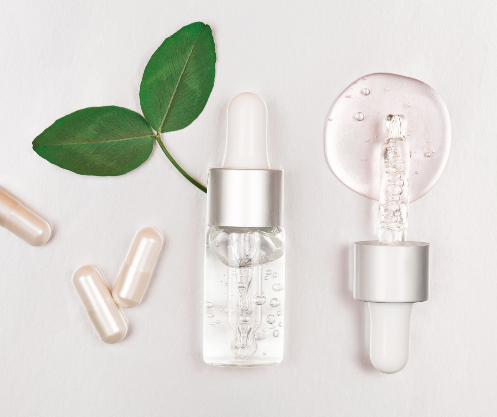
Mantiene la piel hidratada y firme.
Antioxidante y protege la piel.
Nutrición profunda y suavidad.
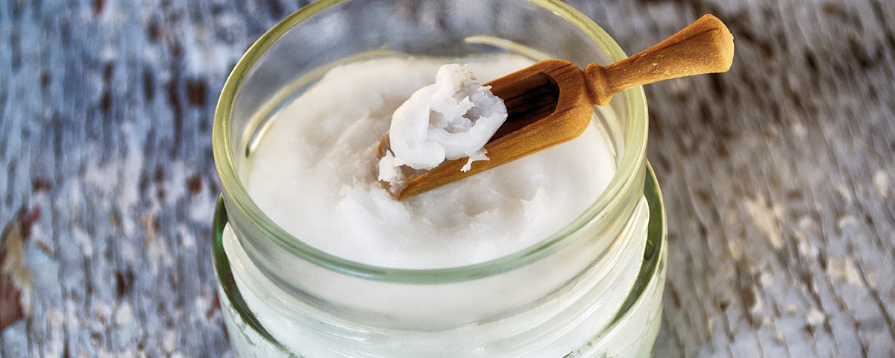
Repara la barrera natural de la piel.
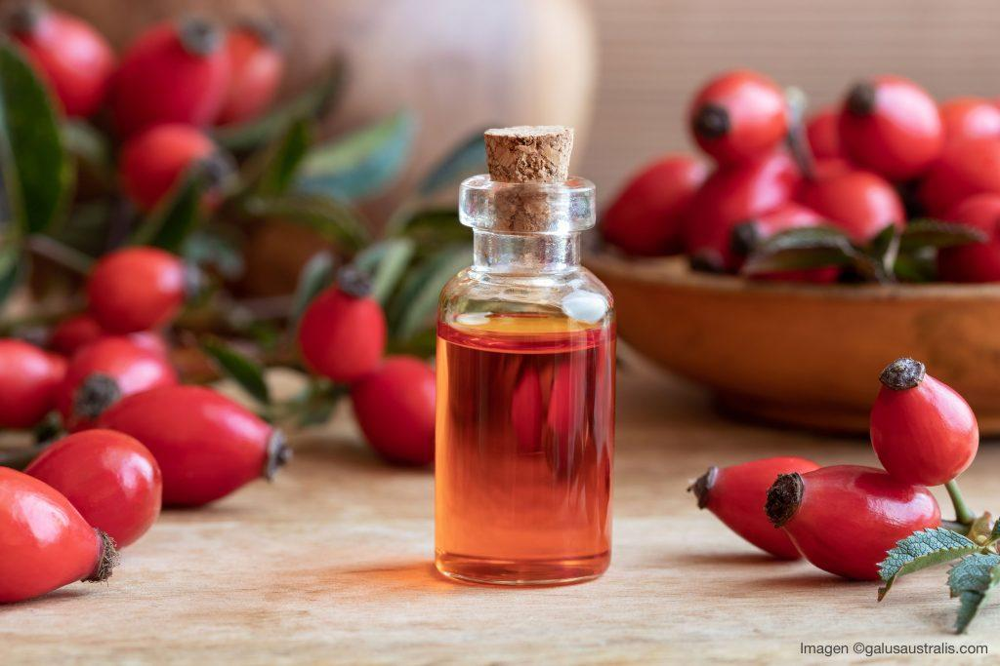
Regenera y reduce marcas en la piel.
Calma irritaciones y rojeces.
Refresca y desinflama la piel.
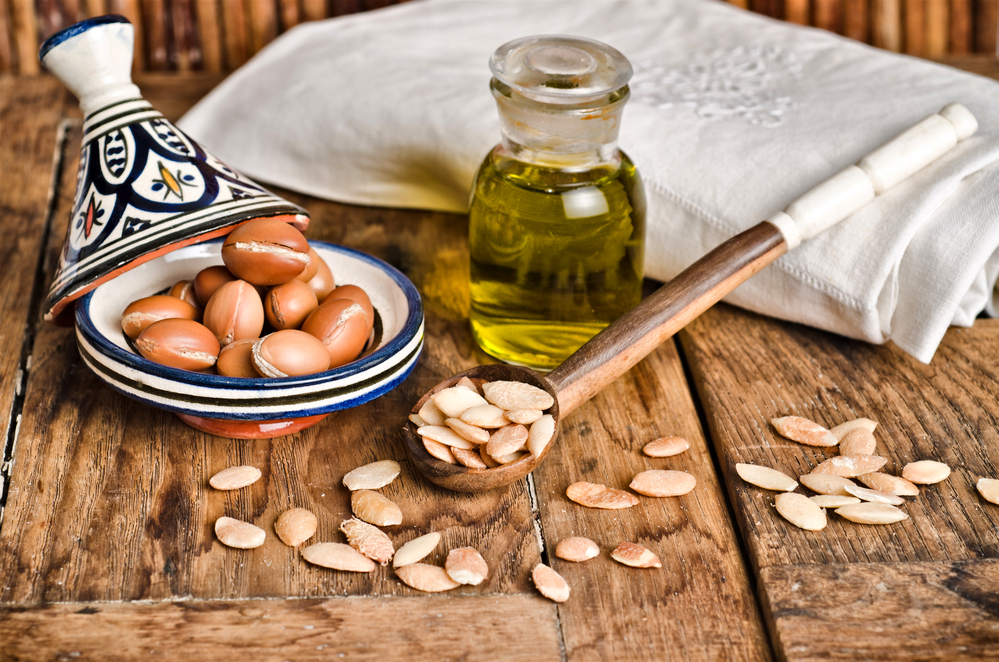
Nutre y protege la piel seca.
Antioxidante y protectora de la piel.
El cuidado de la piel sensible requiere atención, constancia y el uso de productos adecuados. A continuación, te ofrecemos algunos consejos clave para mantener tu piel sana, hidratada y protegida frente a factores externos.
La piel sensible reacciona fácilmente a factores externos como cambios de temperatura, productos agresivos o estrés. Es importante utilizar productos suaves, sin alcohol ni perfumes, que respeten la barrera cutánea.
Recomendación: opta por cosméticos con ingredientes calmantes como aloe vera, manzanilla o avena.
Una buena rutina es clave para mantener la piel equilibrada. La limpieza suave, seguida de hidratación, ayuda a prevenir irritaciones y sequedad.
Recomendación: utiliza productos específicos para piel sensible y evita cambiar constantemente de cosméticos.
El sol, el frío o la contaminación pueden afectar negativamente a la piel. Es fundamental protegerla para evitar daños a largo plazo.
Recomendación: usa protector solar diariamente y evita exposiciones prolongadas sin protección.
La exfoliación ayuda a eliminar células muertas, pero en pieles sensibles debe hacerse con precaución para no causar irritación.
Recomendación: realiza una exfoliación suave una vez por semana con productos específicos.
Una dieta equilibrada influye directamente en el estado de la piel. La hidratación y el consumo de vitaminas ayudan a mantenerla saludable.
Recomendación: bebe suficiente agua y consume alimentos ricos en antioxidantes como frutas y verduras.
El uso excesivo de productos, cambios constantes en la rutina o el uso de cosméticos inadecuados pueden empeorar la sensibilidad.
Recomendación: mantén una rutina simple y constante, adaptada a tu tipo de piel.